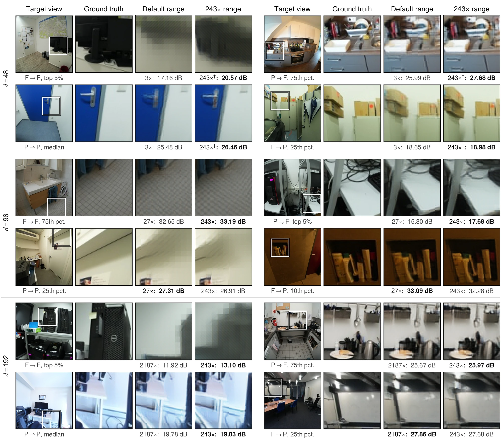
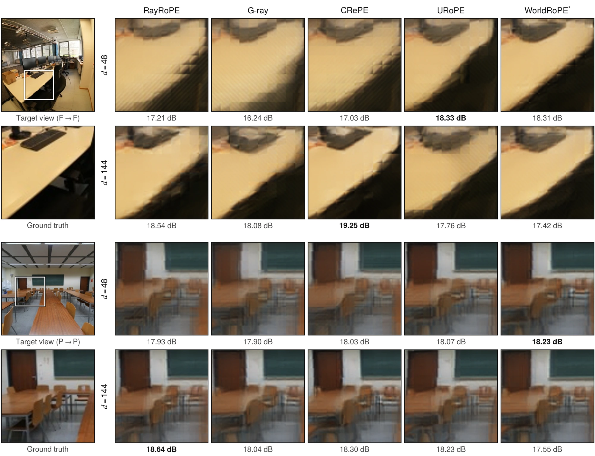
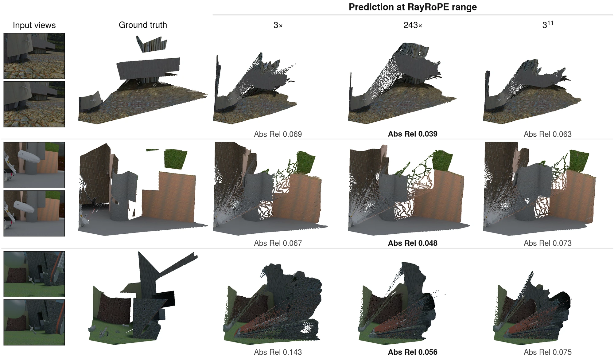

RayRoPE's gap to WorldRoPE at d = 48 when changing its range from 3× to 243×.
Top-frequency range (8-pixel patches) where RayRoPE, URoPE, and WorldRoPE all perform well.
PSNR lost at 311 recovered by blocking only high-frequency depth gradients.
One-minute summary
How attention head size changes geometric RoPE frequencies, and why bands that are too narrow or too wide fail.
Summary
Geometric rotary position encodings (RoPE) let multi-view transformers reason about cameras by rotating attention features across several spatial frequencies, forming a frequency band. In existing implementations, these frequencies come from default rules that either keep 2D RoPE's upper limit or tie the frequency range to the attention head dimension. On RealEstate10K, RayRoPE matches the strongest baseline with 144-channel heads (47M), yet trails by 1.2 dB with 48-channel heads (25M). Changing only its 48-channel range from 3× to 243× recovers 0.9 dB of that gap. Across view synthesis and two-view depth, all three projection-based encodings work well when their top frequency lies between 0.3 and 3 rotations per 8-pixel patch.
Overly wide bands fail for a different reason. RayRoPE averages each rotation over a predicted depth interval, which damps high frequencies in the forward pass but leaves their gradients to predicted depth undamped. Stopping only those high-frequency depth gradients recovers 90–93% of the lost PSNR. We conclude with four practical guidelines for setting and reporting frequency bands in multi-view benchmarks.
Frequency band sweep
Same backbone, data, and seed, varying only the frequency range. Select a tile or toggle the stop-gradient switch.
RealEstate10K test set (6,474 scenes). A narrow range (3×) blurs fine structure, while a wide range (311) leaves color artifacts along the patch grid that disappear once high-frequency depth gradients are stopped.
Along the camera path
Four 47M single-ray RayRoPE models rendered from the same two input views. Notice the window frames and branches.
Across views, positions are continuous
Within one image, tokens sit on integer patch centers, so frequencies above 0.5 rot./patch alias. Across views, reprojected rays land at continuous sub-patch positions, where frequencies near 1 rot./patch separate fine offsets instead of aliasing.
Default bands depend on head dimension
RayRoPE fixes its lowest frequency and triples at each step, so its range shrinks to 3× at d = 48 and reaches 311 on one ray at d = 144. URoPE and WorldRoPE instead keep the top frequency near 2D RoPE.
Head size changes benchmark rankings
At fixed 25M model width, default RayRoPE trails URoPE by dB and WorldRoPE by dB at d = 48, then overtakes URoPE at d = 96. Fixing RayRoPE to 243× keeps PSNR within dB across all head sizes.
25M comparison (d = 48)
Compare 15 scenes across bands
Choose a scene and frequency range, or press and hold the render to blink ground truth.
| Top frequency | |
| Test PSNR (6,474) | |
| SSIM / LPIPS |
Forward damping, undamped gradients
Averaging a fast wave over the interval [μ − Δ, μ + Δ] damps the forward output at O(1/ω). Differentiating with respect to the center μ multiplies by ω, canceling that decay and leaving O(1) oscillating gradients from the sharp endpoints. A Gaussian window damps both.
Stopping depth gradients restores 311
Keeping the forward pass unchanged and stopping only depth gradients above 1 rot./patch recovers % of the lost PSNR (% on a second seed, and 90% zero-shot on ACID).
Share of the 311 → 243× PSNR gap recovered (47M RayRoPE; white dot: seed 2).
ScanNet++ and Scenes11 depth
The same band behavior holds on mixed fisheye/pinhole view synthesis (ScanNet++), zero-shot outdoor scenes (ACID), and two-view depth estimation (Scenes11). Click any figure to zoom.





Practical guidelines
01 Set bands in image units
Anchor frequencies per patch rather than via head dimension. Top frequencies in 0.3–3 rot./patch work well across encodings.
02 Keep intermediate frequencies in small heads
With narrow heads (d = 48), drop redundant coordinates so the band still covers 243× instead of truncating to 3×.
03 Apply smoothing only across views
Same-view coordinates have no depth uncertainty. Removing WorldRoPE's same-view footprint gains 0.33 dB at 25M and dB at 47M.
04 Report and match bands
Report the rotated coordinates, frequency counts, and spans alongside head dimension when comparing encodings.
Evaluation protocol & scene selection details
- Paper figures. Three scenes from Figs. 1 and 5 (selection rules and percentiles in Supp. Sec. G).
- Random test scenes. Eight uncurated scenes matching Fig. S8 (note that 25M 3× uses single-ray in paper figures vs. default three-ray here).
- Large differences. Four scenes above the 99th percentile of 243×-over-311 PSNR gain.
- Training and evaluation. 80,000 steps in the official WorldRoPE codebase, averaged over all 6,474 RealEstate10K test scenes (256×256, 2 context to 3 target views).
- Multi-seed variance at 311. Interactive renders show the non-jumped dB checkpoint (five runs span – dB, up to 25.41 dB).
- Media format. Stills: lossless WebP; videos: H.264 MP4 with VP9 WebM fallback at 2× upscaling.